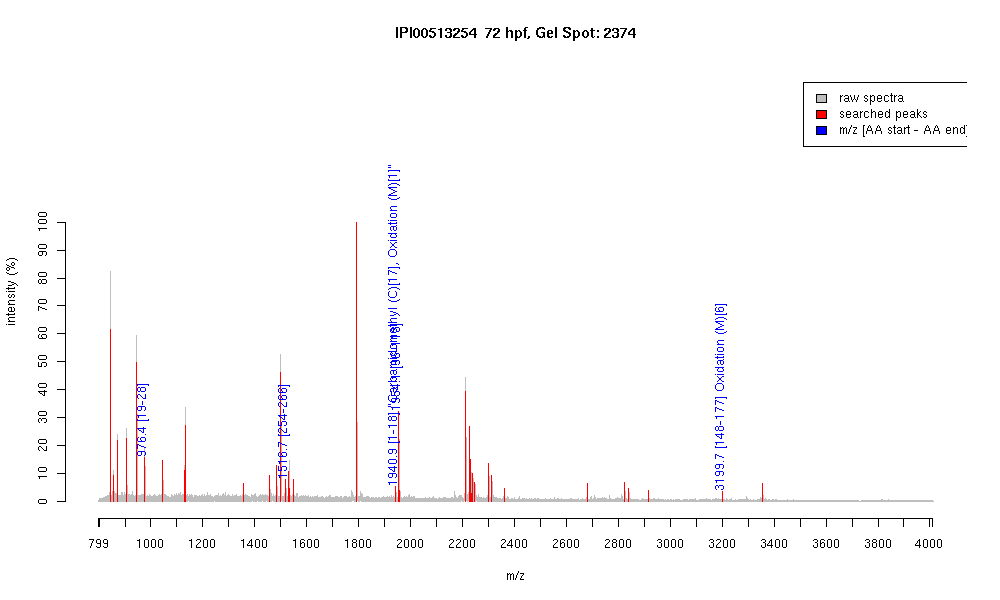

| Name | PREDICTED: similar to beta-cytoplasmicactin2 isoform 6 |
|---|---|
| MW | 30014.9 |
| PI | 5.63 |
| Mascot Protein Score | 75 |
| Masses (matched / unmatched) | 5 / 51 |

| Peptide | MZ (calc) | MZ (observed) | Error (DA) | Error (PPM) | Start | Stop | Modifications |
|---|---|---|---|---|---|---|---|
| AGFAGDDAPR | 976.4482 | 976.4464 | -0.0018 | -2 | 19 | 28 | |
| QEYDESGPSIVHR | 1516.7026 | 1516.7029 | 0.0003 | 0 | 254 | 266 | |
| MDDEIAALVVDNGSGMCK | 1940.8398 | 1940.933 | 0.0932 | 48 | 1 | 18 | "Carbamidomethyl (C)[17], Oxidation (M)[1]" |
| VAPEEHPVLLTEAPLNPK | 1954.0643 | 1954.0538 | -0.0105 | -5 | 96 | 113 | |
| TTGIVMDSGDGVTHTVPIYEGYALPHAILR | 3199.6091 | 3199.6616 | 0.0525 | 16 | 148 | 177 | Oxidation (M)[6] |